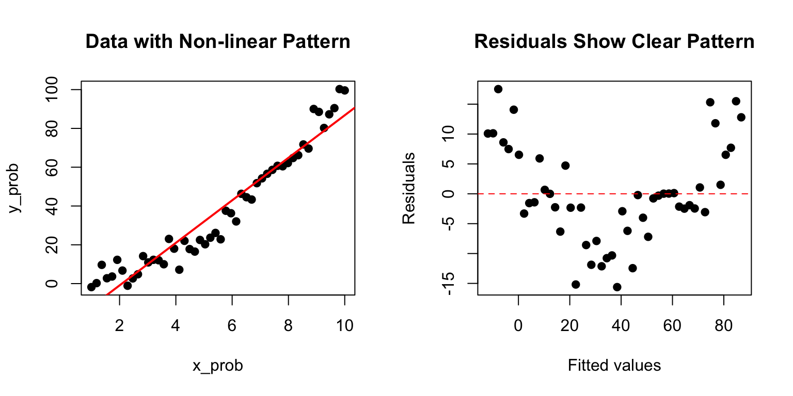

Correlation tells us that two variables are related, but it does not allow us to predict one from the other or to describe the nature of that relationship. Linear regression goes further—it models the relationship between variables, allowing us to make predictions and to quantify how changes in one variable are associated with changes in another.
In simple linear regression, we model a response variable Y as a linear function of a predictor variable X:
\[y_i = \beta_0 + \beta_1 x_i + \epsilon_i\]
Here \(\beta_0\) is the intercept (the expected value of Y when X equals zero), \(\beta_1\) is the slope (how much Y changes for a one-unit change in X), and \(\epsilon_i\) represents the random error—the part of Y not explained by X.
Figure 22.1: Conceptual diagram of simple linear regression showing the relationship between predictor X and response Y with the linear model equation
22.2 Origins of the Term “Regression”
The term “regression” comes from Francis Galton’s studies of heredity in the 1880s. He observed that tall parents tended to have children who were tall, but not as extremely tall as the parents—children’s heights “regressed” toward the population mean. This phenomenon, now called regression to the mean, is a statistical artifact that appears whenever two variables are imperfectly correlated.
Figure 22.2: Historical illustration of Galton’s regression to the mean, showing how offspring heights regress toward the population mean
22.3 The Regression Fallacy
Understanding regression to the mean is crucial because ignoring it leads to a common error in reasoning called the regression fallacy. This occurs when we attribute regression to the mean to some other cause—typically claiming credit for improvement that was simply statistical regression.
The most famous example is the “Sophomore Slump” in baseball. The player who wins Rookie of the Year typically performs worse in their second season. Sportswriters often blame this on pressure, complacency, or teams “figuring out” the player. But much of this decline is simply regression to the mean.
Consider why: to win Rookie of the Year, a player typically needs exceptional performance—often their personal best. This outstanding season likely involved skill plus some good luck (favorable conditions, timely hits, etc.). In the following season, luck averages out, and performance regresses toward the player’s true ability level.
Code
# Simulating the Sophomore Slumpset.seed(42)n_players <-500# True talent level for each player (varies between players)true_talent <-rnorm(n_players, mean =0.265, sd =0.020)# Season 1: observed performance = true talent + luckluck_season1 <-rnorm(n_players, mean =0, sd =0.025)batting_avg_yr1 <- true_talent + luck_season1# Season 2: observed performance = same true talent + different luckluck_season2 <-rnorm(n_players, mean =0, sd =0.025)batting_avg_yr2 <- true_talent + luck_season2# Find the "Rookie of the Year" - best performer in year 1roy_idx <-which.max(batting_avg_yr1)# Look at top 10 performers in year 1top_10 <-order(batting_avg_yr1, decreasing =TRUE)[1:10]cat("Top 10 performers in Year 1 vs Year 2:\n")
Top 10 performers in Year 1 vs Year 2:
Code
cat("========================================\n")
========================================
Code
for (i in1:10) { idx <- top_10[i] change <- batting_avg_yr2[idx] - batting_avg_yr1[idx]cat(sprintf("Player %d: Yr1 = %.3f, Yr2 = %.3f, Change = %+.3f\n", i, batting_avg_yr1[idx], batting_avg_yr2[idx], change))}
# How many of top 10 declined?declines <-sum(batting_avg_yr2[top_10] < batting_avg_yr1[top_10])cat(sprintf("\n%d of top 10 performers showed a decline (the 'slump')\n", declines))
10 of top 10 performers showed a decline (the 'slump')
Notice that nearly all of the top performers declined—not because of anything about being a sophomore, but because extreme initial performance tends to be followed by more average performance.
Code
# Visualize regression to the meanplot(batting_avg_yr1, batting_avg_yr2,pch =19, col =rgb(0, 0, 0, 0.3),xlab ="Year 1 Batting Average",ylab ="Year 2 Batting Average",main ="Regression to the Mean: The Sophomore Slump",xlim =c(0.20, 0.35), ylim =c(0.20, 0.35))# Add y = x line (what we'd see with no regression)abline(a =0, b =1, col ="gray", lty =2, lwd =2)# Add regression linereg_line <-lm(batting_avg_yr2 ~ batting_avg_yr1)abline(reg_line, col ="red", lwd =2)# Highlight top performerspoints(batting_avg_yr1[top_10], batting_avg_yr2[top_10],pch =19, col ="blue", cex =1.5)# Mark the "Rookie of the Year"points(batting_avg_yr1[roy_idx], batting_avg_yr2[roy_idx],pch =17, col ="red", cex =2)legend("topleft",legend =c("All players", "Top 10 Year 1", "Best performer","No regression (y=x)", "Regression line"),pch =c(19, 19, 17, NA, NA),lty =c(NA, NA, NA, 2, 1),col =c(rgb(0,0,0,0.3), "blue", "red", "gray", "red"),lwd =c(NA, NA, NA, 2, 2))
Figure 22.3: Visualization of regression to the mean in baseball batting averages, showing how top Year 1 performers tend to decline in Year 2, not due to a sophomore slump but statistical regression
The dashed line shows what we would see if Year 1 perfectly predicted Year 2 (no regression to the mean). The red regression line shows reality—it’s flatter, meaning extreme Year 1 performers tend to move toward the center in Year 2.
Avoiding the Regression Fallacy
The regression fallacy appears in many contexts:
Medical treatments: Patients seek treatment when symptoms are worst; subsequent improvement may be regression, not treatment effect
Performance management: Workers reprimanded for poor performance often improve; those praised for good performance often decline—both may be regression
Educational interventions: Students identified as struggling (tested at their worst) often improve regardless of intervention
When evaluating any intervention applied to extreme cases, always consider whether observed changes might simply be regression to the mean.
22.4 Fitting the Model: Ordinary Least Squares
The most common method for fitting a regression line is ordinary least squares (OLS). OLS finds the line that minimizes the sum of squared residuals—the squared vertical distances between observed points and the fitted line.
Figure 22.4: Illustration of ordinary least squares showing how the regression line minimizes the sum of squared vertical distances (residuals) from points to the line
The OLS estimates for the slope and intercept are:
Notice that the slope equals the correlation coefficient times the ratio of standard deviations. This makes clear the connection between correlation and regression.
22.5 Linear Regression in R
Code
# Example: zebrafish size dataset.seed(42)n <-100length_cm <-runif(n, 0.5, 3.5)weight_mg <-15* length_cm^2+rnorm(n, sd =10)# Fit the modelfish_lm <-lm(weight_mg ~ length_cm)summary(fish_lm)
Call:
lm(formula = weight_mg ~ length_cm)
Residuals:
Min 1Q Median 3Q Max
-39.277 -9.033 -0.432 9.998 29.934
Coefficients:
Estimate Std. Error t value Pr(>|t|)
(Intercept) -51.429 3.579 -14.37 <2e-16 ***
length_cm 61.660 1.583 38.95 <2e-16 ***
---
Signif. codes: 0 '***' 0.001 '**' 0.01 '*' 0.05 '.' 0.1 ' ' 1
Residual standard error: 14.27 on 98 degrees of freedom
Multiple R-squared: 0.9393, Adjusted R-squared: 0.9387
F-statistic: 1517 on 1 and 98 DF, p-value: < 2.2e-16
The output shows the estimated coefficients with their standard errors, t-statistics, and p-values. The Multiple R-squared indicates how much of the variance in Y is explained by X.
Code
# Visualize the fitplot(length_cm, weight_mg, pch =19, col ="blue",xlab ="Length (cm)", ylab ="Weight (mg)",main ="Linear Regression: Weight vs Length")abline(fish_lm, col ="red", lwd =2)
Figure 22.5: Linear regression of zebrafish weight versus length showing fitted regression line
22.6 Interpretation of Coefficients
The intercept\(\hat{\beta}_0\) is the predicted value of Y when X equals zero. This may or may not be meaningful depending on whether X = 0 makes sense in your context.
The slope\(\hat{\beta}_1\) is the predicted change in Y for a one-unit increase in X. If the slope is 15, then each additional unit of X is associated with 15 more units of Y on average.
22.7 Hypothesis Testing in Regression
The hypothesis test for the slope asks whether there is evidence of a relationship between X and Y:
The test uses a t-statistic, comparing the estimated slope to its standard error. The p-value indicates the probability of observing a slope this far from zero if the true slope were zero.
Figure 22.6: Hypothesis testing in regression showing the t-distribution for testing whether the slope coefficient differs from zero
22.8 R-Squared: Measuring Model Fit
R-squared (\(R^2\)) measures the proportion of variance in Y explained by the model:
In simple linear regression, \(R^2\) equals the square of the correlation coefficient. An \(R^2\) of 0.7 means the model explains 70% of the variance in Y; the remaining 30% is unexplained.
Be cautious with \(R^2\)—it always increases when you add predictors, even useless ones. Adjusted \(R^2\) penalizes for model complexity.
22.9 Making Predictions
Once you have a fitted model, you can predict Y for new values of X:
Code
# Predict weight for new lengthsnew_lengths <-data.frame(length_cm =c(1.0, 2.0, 3.0))predict(fish_lm, newdata = new_lengths, interval ="confidence")
The confidence interval indicates uncertainty about the mean Y at each X value. A prediction interval (using interval = "prediction") would be wider, accounting for individual variability around that mean.
22.10 Tidyverse Approach: The broom Package
The summary() output from lm() is informative but awkward to work with programmatically. The broom package provides three functions that convert model output into tidy tibbles, making it easy to use regression results in tidyverse workflows.
tidy(): Extract Coefficient Statistics
The tidy() function extracts coefficient estimates, standard errors, test statistics, and p-values as a tibble:
Code
library(broom)# Standard summary output (not tidy)summary(fish_lm)$coefficients
Estimate Std. Error t value Pr(>|t|)
(Intercept) -51.42918 3.578653 -14.37110 7.241174e-26
length_cm 61.66027 1.582874 38.95464 1.914443e-61
Code
# Tidy output - much easier to work withtidy(fish_lm)
The broom package integrates regression analysis into tidyverse workflows:
Reproducibility: Tidy output is easier to save, share, and version control
Visualization: Augmented data works directly with ggplot2
Iteration: Compare many models using map() and bind_rows()
Consistency: Same functions work for lm(), glm(), t.test(), and 100+ model types
Code
# Example: Fit models to multiple groupsmtcars |>group_by(cyl) |>group_modify(~tidy(lm(mpg ~ wt, data = .x)))
22.11 Model Assumptions
Linear regression assumptions include:
Linearity: The relationship between X and Y is linear
Independence: Observations are independent of each other
Normality: Residuals are normally distributed
Homoscedasticity: Residuals have constant variance across X
These assumptions should be checked through residual analysis.
22.12 Residual Analysis
Residuals are the differences between observed and fitted values: \(e_i = y_i - \hat{y}_i\). Examining residuals reveals whether model assumptions are satisfied.
Figure 22.8: Standard residual diagnostic plots for linear regression including residuals vs fitted, Q-Q plot, scale-location, and residuals vs leverage
Key diagnostic plots:
Residuals vs Fitted: Should show random scatter around zero. Patterns suggest non-linearity or heteroscedasticity.
Q-Q Plot: Residuals should fall along the diagonal line if normally distributed. Deviations at the tails indicate non-normality.
Scale-Location: Should show constant spread. A funnel shape indicates heteroscedasticity.
Residuals vs Leverage: Identifies influential points. Points with high leverage and large residuals may unduly influence the fit.
Code
# Example of problematic residualsset.seed(123)x_prob <-seq(1, 10, length.out =50)y_prob <- x_prob^2+rnorm(50, sd =5) # Quadratic relationshiplm_prob <-lm(y_prob ~ x_prob)par(mfrow =c(1, 2))plot(x_prob, y_prob, pch =19, main ="Data with Non-linear Pattern")abline(lm_prob, col ="red", lwd =2)plot(fitted(lm_prob), residuals(lm_prob), pch =19,xlab ="Fitted values", ylab ="Residuals",main ="Residuals Show Clear Pattern")abline(h =0, col ="red", lty =2)

Figure 22.9: Example of problematic residuals from fitting a linear model to nonlinear data, showing curved pattern in residual plot
The curved pattern in the residuals reveals that a linear model is inappropriate—the true relationship is non-linear.
22.13 Model I vs Model II Regression
Standard OLS regression (Model I) assumes X is measured without error and minimizes vertical distances to the line. This is appropriate when:
X is fixed by the experimenter (controlled variable)
X is measured with negligible error compared to Y
The goal is prediction of Y from X
When both variables are measured with error (common in observational studies), Model II regression may be more appropriate. Model II methods include:
Major Axis (MA) regression: Minimizes perpendicular distances to the line
Reduced Major Axis (RMA): Often preferred when both variables have similar measurement error
Code
# Model I slope estimateslope_model1 <-coef(fish_lm)[2]# Reduced Major Axis slope estimate (ratio of standard deviations)slope_rma <-sd(weight_mg) /sd(length_cm) *sign(cor(length_cm, weight_mg))cat("Model I (OLS) slope:", round(slope_model1, 3), "\n")
Model I (OLS) slope: 61.66
Code
cat("Model II (RMA) slope:", round(slope_rma, 3), "\n")
Model II (RMA) slope: 63.62
When to Use Model II Regression
Use Model II regression when: - Both X and Y are random variables measured with error - You want to describe the relationship rather than predict Y from X - You need to compare slopes across groups (e.g., allometric scaling)
The lmodel2 package in R provides Model II regression methods.
22.14 Extrapolation Warning
Regression models should only be used to make predictions within the range of observed X values. Extrapolation—predicting beyond this range—is risky because the linear relationship may not hold.
Code
# Danger of extrapolationplot(length_cm, weight_mg, pch =19, col ="blue",xlim =c(0, 6), ylim =c(-50, 600),xlab ="Length (cm)", ylab ="Weight (mg)",main ="Extrapolation Risk")abline(fish_lm, col ="red", lwd =2)abline(v =c(min(length_cm), max(length_cm)), col ="gray", lty =2)# Mark extrapolation zonerect(max(length_cm), -50, 6, 600, col =rgb(1, 0, 0, 0.1), border =NA)text(5, 100, "Extrapolation\nzone", col ="red")
Figure 22.10: Illustration of extrapolation risk showing how predictions beyond the observed data range (shaded zone) may be unreliable
22.15 Choosing Your Curve-Fitting Method
As you continue through this book, you will encounter many approaches to modeling relationships in data beyond simple linear regression. Figure 22.11 offers a tongue-in-cheek guide to the different “messages” sent by various curve-fitting choices. While humorous, it makes an important point: the method you choose communicates something about your analysis. A simple linear fit says “I believe there’s a basic linear relationship.” A polynomial fit says “I want a curved line.” LOESS says “I’m letting the data speak for itself.” And confidence intervals say “I’m honestly quantifying my uncertainty.” As you learn more sophisticated methods, keep in mind that simpler approaches are often preferable when they adequately describe the data.
Figure 22.11: A humorous guide to curve-fitting methods and the messages they send. While satirical, this comic highlights an important truth: your choice of model communicates assumptions about the relationship in your data. Simple, interpretable models are often preferable to complex approaches that overfit.
22.16 Summary
Simple linear regression models the relationship between a predictor and response variable:
OLS finds the line minimizing squared residuals
The slope indicates how Y changes per unit change in X
R-squared measures proportion of variance explained
Residual analysis checks model assumptions
Model II regression is appropriate when both variables have measurement error
Avoid extrapolating beyond the range of observed data
22.17 Practice Exercises
Exercise R.1: Simple Linear Regression
Using a dataset of your choice (or the built-in mtcars), fit a linear model with lm()
Examine the model summary
Create a scatterplot with the regression line
Plot the residuals—do they appear randomly distributed?
Code
# Example with built-in datadata(mtcars)model <-lm(mpg ~ wt, data = mtcars)summary(model)# Regression plotplot(mpg ~ wt, data = mtcars)abline(model, col ="red")# Residual plotplot(model$fitted.values, model$residuals)abline(h =0, col ="red", lty =2)
Exercise R.2: Interpreting Coefficients
Using your model from Exercise R.1:
What does the intercept represent?
What does the slope represent?
What is the R-squared value and what does it mean?
Is the relationship statistically significant?
Exercise R.3: Model Diagnostics
Check the assumptions of your linear model:
Use plot(model) to generate diagnostic plots
Are the residuals normally distributed? (Q-Q plot)
Is there constant variance? (Residuals vs. Fitted)
Are there influential points? (Cook’s distance)
Exercise R.4: Prediction
Using your fitted model:
Predict the response for a new observation
Calculate the confidence interval for the prediction
What happens when you extrapolate beyond the range of your data?
Code
# Predict for a new valuenew_data <-data.frame(wt =3.5)predict(model, newdata = new_data, interval ="confidence")
22.18 Additional Resources
James et al. (2023) - Excellent introduction to regression in the context of statistical learning
Logan (2010) - Detailed coverage of regression with biological applications
James, Gareth, Daniela Witten, Trevor Hastie, and Robert Tibshirani. 2023. An Introduction to Statistical Learning with Applications in r. 2nd ed. Springer. https://www.statlearning.com.
Logan, Murray. 2010. Biostatistical Design and Analysis Using r. Wiley-Blackwell.
Source Code
# Simple Linear Regression {#sec-linear-regression}```{r}#| echo: false#| message: falselibrary(tidyverse)theme_set(theme_minimal())```## From Correlation to PredictionCorrelation tells us that two variables are related, but it does not allow us to predict one from the other or to describe the nature of that relationship. Linear regression goes further—it models the relationship between variables, allowing us to make predictions and to quantify how changes in one variable are associated with changes in another.In simple linear regression, we model a response variable Y as a linear function of a predictor variable X:$$y_i = \beta_0 + \beta_1 x_i + \epsilon_i$$Here $\beta_0$ is the intercept (the expected value of Y when X equals zero), $\beta_1$ is the slope (how much Y changes for a one-unit change in X), and $\epsilon_i$ represents the random error—the part of Y not explained by X.{#fig-regression-concept fig-align="center"}## Origins of the Term "Regression"The term "regression" comes from Francis Galton's studies of heredity in the 1880s. He observed that tall parents tended to have children who were tall, but not as extremely tall as the parents—children's heights "regressed" toward the population mean. This phenomenon, now called regression to the mean, is a statistical artifact that appears whenever two variables are imperfectly correlated.{#fig-galton-regression fig-align="center"}## The Regression FallacyUnderstanding regression to the mean is crucial because ignoring it leads to a common error in reasoning called the **regression fallacy**. This occurs when we attribute regression to the mean to some other cause—typically claiming credit for improvement that was simply statistical regression.The most famous example is the "Sophomore Slump" in baseball. The player who wins Rookie of the Year typically performs worse in their second season. Sportswriters often blame this on pressure, complacency, or teams "figuring out" the player. But much of this decline is simply regression to the mean.Consider why: to win Rookie of the Year, a player typically needs exceptional performance—often their personal best. This outstanding season likely involved skill plus some good luck (favorable conditions, timely hits, etc.). In the following season, luck averages out, and performance regresses toward the player's true ability level.```{r}#| fig-width: 8#| fig-height: 5# Simulating the Sophomore Slumpset.seed(42)n_players <-500# True talent level for each player (varies between players)true_talent <-rnorm(n_players, mean =0.265, sd =0.020)# Season 1: observed performance = true talent + luckluck_season1 <-rnorm(n_players, mean =0, sd =0.025)batting_avg_yr1 <- true_talent + luck_season1# Season 2: observed performance = same true talent + different luckluck_season2 <-rnorm(n_players, mean =0, sd =0.025)batting_avg_yr2 <- true_talent + luck_season2# Find the "Rookie of the Year" - best performer in year 1roy_idx <-which.max(batting_avg_yr1)# Look at top 10 performers in year 1top_10 <-order(batting_avg_yr1, decreasing =TRUE)[1:10]cat("Top 10 performers in Year 1 vs Year 2:\n")cat("========================================\n")for (i in1:10) { idx <- top_10[i] change <- batting_avg_yr2[idx] - batting_avg_yr1[idx]cat(sprintf("Player %d: Yr1 = %.3f, Yr2 = %.3f, Change = %+.3f\n", i, batting_avg_yr1[idx], batting_avg_yr2[idx], change))}# How many of top 10 declined?declines <-sum(batting_avg_yr2[top_10] < batting_avg_yr1[top_10])cat(sprintf("\n%d of top 10 performers showed a decline (the 'slump')\n", declines))```Notice that nearly all of the top performers declined—not because of anything about being a sophomore, but because extreme initial performance tends to be followed by more average performance.```{r}#| label: fig-sophomore-slump#| fig-cap: "Visualization of regression to the mean in baseball batting averages, showing how top Year 1 performers tend to decline in Year 2, not due to a sophomore slump but statistical regression"#| fig-width: 8#| fig-height: 6# Visualize regression to the meanplot(batting_avg_yr1, batting_avg_yr2,pch =19, col =rgb(0, 0, 0, 0.3),xlab ="Year 1 Batting Average",ylab ="Year 2 Batting Average",main ="Regression to the Mean: The Sophomore Slump",xlim =c(0.20, 0.35), ylim =c(0.20, 0.35))# Add y = x line (what we'd see with no regression)abline(a =0, b =1, col ="gray", lty =2, lwd =2)# Add regression linereg_line <-lm(batting_avg_yr2 ~ batting_avg_yr1)abline(reg_line, col ="red", lwd =2)# Highlight top performerspoints(batting_avg_yr1[top_10], batting_avg_yr2[top_10],pch =19, col ="blue", cex =1.5)# Mark the "Rookie of the Year"points(batting_avg_yr1[roy_idx], batting_avg_yr2[roy_idx],pch =17, col ="red", cex =2)legend("topleft",legend =c("All players", "Top 10 Year 1", "Best performer","No regression (y=x)", "Regression line"),pch =c(19, 19, 17, NA, NA),lty =c(NA, NA, NA, 2, 1),col =c(rgb(0,0,0,0.3), "blue", "red", "gray", "red"),lwd =c(NA, NA, NA, 2, 2))```The dashed line shows what we would see if Year 1 perfectly predicted Year 2 (no regression to the mean). The red regression line shows reality—it's flatter, meaning extreme Year 1 performers tend to move toward the center in Year 2.::: {.callout-warning}## Avoiding the Regression FallacyThe regression fallacy appears in many contexts:- **Medical treatments**: Patients seek treatment when symptoms are worst; subsequent improvement may be regression, not treatment effect- **Performance management**: Workers reprimanded for poor performance often improve; those praised for good performance often decline—both may be regression- **Educational interventions**: Students identified as struggling (tested at their worst) often improve regardless of interventionWhen evaluating any intervention applied to extreme cases, always consider whether observed changes might simply be regression to the mean.:::## Fitting the Model: Ordinary Least SquaresThe most common method for fitting a regression line is **ordinary least squares (OLS)**. OLS finds the line that minimizes the sum of squared residuals—the squared vertical distances between observed points and the fitted line.{#fig-ols-concept fig-align="center"}The OLS estimates for the slope and intercept are:$$\hat{\beta}_1 = \frac{\sum(x_i - \bar{x})(y_i - \bar{y})}{\sum(x_i - \bar{x})^2} = r \frac{s_y}{s_x}$$$$\hat{\beta}_0 = \bar{y} - \hat{\beta}_1 \bar{x}$$Notice that the slope equals the correlation coefficient times the ratio of standard deviations. This makes clear the connection between correlation and regression.## Linear Regression in R```{r}#| fig-width: 7#| fig-height: 5# Example: zebrafish size dataset.seed(42)n <-100length_cm <-runif(n, 0.5, 3.5)weight_mg <-15* length_cm^2+rnorm(n, sd =10)# Fit the modelfish_lm <-lm(weight_mg ~ length_cm)summary(fish_lm)```The output shows the estimated coefficients with their standard errors, t-statistics, and p-values. The Multiple R-squared indicates how much of the variance in Y is explained by X.```{r}#| label: fig-fish-regression#| fig-cap: "Linear regression of zebrafish weight versus length showing fitted regression line"#| fig-width: 7#| fig-height: 5# Visualize the fitplot(length_cm, weight_mg, pch =19, col ="blue",xlab ="Length (cm)", ylab ="Weight (mg)",main ="Linear Regression: Weight vs Length")abline(fish_lm, col ="red", lwd =2)```## Interpretation of CoefficientsThe **intercept** $\hat{\beta}_0$ is the predicted value of Y when X equals zero. This may or may not be meaningful depending on whether X = 0 makes sense in your context.The **slope** $\hat{\beta}_1$ is the predicted change in Y for a one-unit increase in X. If the slope is 15, then each additional unit of X is associated with 15 more units of Y on average.## Hypothesis Testing in RegressionThe hypothesis test for the slope asks whether there is evidence of a relationship between X and Y:$$H_0: \beta_1 = 0 \quad \text{(no relationship)}$$$$H_A: \beta_1 \neq 0 \quad \text{(relationship exists)}$$The test uses a t-statistic, comparing the estimated slope to its standard error. The p-value indicates the probability of observing a slope this far from zero if the true slope were zero.{#fig-hypothesis-test fig-align="center"}## R-Squared: Measuring Model Fit**R-squared** ($R^2$) measures the proportion of variance in Y explained by the model:$$R^2 = 1 - \frac{SS_{error}}{SS_{total}} = \frac{SS_{model}}{SS_{total}}$$In simple linear regression, $R^2$ equals the square of the correlation coefficient. An $R^2$ of 0.7 means the model explains 70% of the variance in Y; the remaining 30% is unexplained.Be cautious with $R^2$—it always increases when you add predictors, even useless ones. Adjusted $R^2$ penalizes for model complexity.## Making PredictionsOnce you have a fitted model, you can predict Y for new values of X:```{r}# Predict weight for new lengthsnew_lengths <-data.frame(length_cm =c(1.0, 2.0, 3.0))predict(fish_lm, newdata = new_lengths, interval ="confidence")```The confidence interval indicates uncertainty about the mean Y at each X value. A prediction interval (using `interval = "prediction"`) would be wider, accounting for individual variability around that mean.## Tidyverse Approach: The broom PackageThe `summary()` output from `lm()` is informative but awkward to work with programmatically. The **broom package** provides three functions that convert model output into tidy tibbles, making it easy to use regression results in tidyverse workflows.### tidy(): Extract Coefficient StatisticsThe `tidy()` function extracts coefficient estimates, standard errors, test statistics, and p-values as a tibble:```{r}library(broom)# Standard summary output (not tidy)summary(fish_lm)$coefficients# Tidy output - much easier to work withtidy(fish_lm)```The tidy format makes it easy to filter, arrange, or visualize coefficients:```{r}# Extract just significant coefficientstidy(fish_lm) |>filter(p.value <0.05)# Add confidence intervalstidy(fish_lm, conf.int =TRUE, conf.level =0.95)```### glance(): Model-Level StatisticsThe `glance()` function extracts model-level summaries—R-squared, AIC, BIC, and other fit statistics—as a single-row tibble:```{r}glance(fish_lm)```This is particularly useful when comparing multiple models:```{r}# Compare models with different predictorsfish_lm_simple <-lm(weight_mg ~ length_cm)fish_lm_quad <-lm(weight_mg ~ length_cm +I(length_cm^2))# Combine model summariesbind_rows(glance(fish_lm_simple) |>mutate(model ="linear"),glance(fish_lm_quad) |>mutate(model ="quadratic")) |>select(model, r.squared, adj.r.squared, AIC, BIC)```### augment(): Add Fitted Values and ResidualsThe `augment()` function adds fitted values, residuals, and diagnostic measures to your original data:```{r}# Add model diagnostics to the datafish_augmented <-augment(fish_lm)head(fish_augmented)```The augmented data includes:- `.fitted`: Predicted values- `.resid`: Residuals- `.hat`: Leverage values- `.cooksd`: Cook's distance (influence measure)- `.std.resid`: Standardized residualsThis makes ggplot-based diagnostic plots straightforward:```{r}#| label: fig-broom-diagnostics#| fig-cap: "Residual diagnostic plots created using augmented data from the broom package"#| fig-width: 8#| fig-height: 4# Diagnostic plots with ggplotlibrary(patchwork)p1 <-ggplot(fish_augmented, aes(.fitted, .resid)) +geom_point(alpha =0.6) +geom_hline(yintercept =0, linetype ="dashed", color ="red") +geom_smooth(se =FALSE, color ="blue") +labs(x ="Fitted values", y ="Residuals",title ="Residuals vs Fitted")p2 <-ggplot(fish_augmented, aes(sample = .std.resid)) +stat_qq() +stat_qq_line(color ="red") +labs(x ="Theoretical quantiles", y ="Standardized residuals",title ="Q-Q Plot")p1 + p2```You can also use `augment()` to add predictions for new data:```{r}# Predict for new lengthsnew_fish <-tibble(length_cm =c(1.0, 2.0, 3.0, 4.0))augment(fish_lm, newdata = new_fish, interval ="confidence")```::: {.callout-tip}## Why Use broom?The broom package integrates regression analysis into tidyverse workflows:- **Reproducibility**: Tidy output is easier to save, share, and version control- **Visualization**: Augmented data works directly with ggplot2- **Iteration**: Compare many models using `map()` and `bind_rows()`- **Consistency**: Same functions work for `lm()`, `glm()`, `t.test()`, and 100+ model types```{r}#| eval: false# Example: Fit models to multiple groupsmtcars |>group_by(cyl) |>group_modify(~tidy(lm(mpg ~ wt, data = .x)))```:::## Model AssumptionsLinear regression assumptions include:1. **Linearity**: The relationship between X and Y is linear2. **Independence**: Observations are independent of each other3. **Normality**: Residuals are normally distributed4. **Homoscedasticity**: Residuals have constant variance across XThese assumptions should be checked through residual analysis.## Residual Analysis**Residuals** are the differences between observed and fitted values: $e_i = y_i - \hat{y}_i$. Examining residuals reveals whether model assumptions are satisfied.```{r}#| label: fig-residual-diagnostics#| fig-cap: "Standard residual diagnostic plots for linear regression including residuals vs fitted, Q-Q plot, scale-location, and residuals vs leverage"#| fig-width: 8#| fig-height: 8# Residual diagnostic plotspar(mfrow =c(2, 2))plot(fish_lm)```Key diagnostic plots:1. **Residuals vs Fitted**: Should show random scatter around zero. Patterns suggest non-linearity or heteroscedasticity.2. **Q-Q Plot**: Residuals should fall along the diagonal line if normally distributed. Deviations at the tails indicate non-normality.3. **Scale-Location**: Should show constant spread. A funnel shape indicates heteroscedasticity.4. **Residuals vs Leverage**: Identifies influential points. Points with high leverage and large residuals may unduly influence the fit.```{r}#| label: fig-nonlinear-residuals#| fig-cap: "Example of problematic residuals from fitting a linear model to nonlinear data, showing curved pattern in residual plot"#| fig-width: 8#| fig-height: 4# Example of problematic residualsset.seed(123)x_prob <-seq(1, 10, length.out =50)y_prob <- x_prob^2+rnorm(50, sd =5) # Quadratic relationshiplm_prob <-lm(y_prob ~ x_prob)par(mfrow =c(1, 2))plot(x_prob, y_prob, pch =19, main ="Data with Non-linear Pattern")abline(lm_prob, col ="red", lwd =2)plot(fitted(lm_prob), residuals(lm_prob), pch =19,xlab ="Fitted values", ylab ="Residuals",main ="Residuals Show Clear Pattern")abline(h =0, col ="red", lty =2)```The curved pattern in the residuals reveals that a linear model is inappropriate—the true relationship is non-linear.## Model I vs Model II RegressionStandard OLS regression (Model I) assumes X is measured without error and minimizes vertical distances to the line. This is appropriate when:- X is fixed by the experimenter (controlled variable)- X is measured with negligible error compared to Y- The goal is prediction of Y from XWhen both variables are measured with error (common in observational studies), **Model II regression** may be more appropriate. Model II methods include:- **Major Axis (MA) regression**: Minimizes perpendicular distances to the line- **Reduced Major Axis (RMA)**: Often preferred when both variables have similar measurement error```{r}# Model I slope estimateslope_model1 <-coef(fish_lm)[2]# Reduced Major Axis slope estimate (ratio of standard deviations)slope_rma <-sd(weight_mg) /sd(length_cm) *sign(cor(length_cm, weight_mg))cat("Model I (OLS) slope:", round(slope_model1, 3), "\n")cat("Model II (RMA) slope:", round(slope_rma, 3), "\n")```::: {.callout-note}## When to Use Model II RegressionUse Model II regression when:- Both X and Y are random variables measured with error- You want to describe the relationship rather than predict Y from X- You need to compare slopes across groups (e.g., allometric scaling)The `lmodel2` package in R provides Model II regression methods.:::## Extrapolation WarningRegression models should only be used to make predictions within the range of observed X values. **Extrapolation**—predicting beyond this range—is risky because the linear relationship may not hold.```{r}#| label: fig-extrapolation-risk#| fig-cap: "Illustration of extrapolation risk showing how predictions beyond the observed data range (shaded zone) may be unreliable"#| fig-width: 7#| fig-height: 5# Danger of extrapolationplot(length_cm, weight_mg, pch =19, col ="blue",xlim =c(0, 6), ylim =c(-50, 600),xlab ="Length (cm)", ylab ="Weight (mg)",main ="Extrapolation Risk")abline(fish_lm, col ="red", lwd =2)abline(v =c(min(length_cm), max(length_cm)), col ="gray", lty =2)# Mark extrapolation zonerect(max(length_cm), -50, 6, 600, col =rgb(1, 0, 0, 0.1), border =NA)text(5, 100, "Extrapolation\nzone", col ="red")```## Choosing Your Curve-Fitting MethodAs you continue through this book, you will encounter many approaches to modeling relationships in data beyond simple linear regression. @fig-curve-fitting-humor offers a tongue-in-cheek guide to the different "messages" sent by various curve-fitting choices. While humorous, it makes an important point: the method you choose communicates something about your analysis. A simple linear fit says "I believe there's a basic linear relationship." A polynomial fit says "I want a curved line." LOESS says "I'm letting the data speak for itself." And confidence intervals say "I'm honestly quantifying my uncertainty." As you learn more sophisticated methods, keep in mind that simpler approaches are often preferable when they adequately describe the data.{#fig-curve-fitting-humor fig-align="center" width="70%"}## SummarySimple linear regression models the relationship between a predictor and response variable:- OLS finds the line minimizing squared residuals- The slope indicates how Y changes per unit change in X- R-squared measures proportion of variance explained- Residual analysis checks model assumptions- Model II regression is appropriate when both variables have measurement error- Avoid extrapolating beyond the range of observed data## Practice Exercises### Exercise R.1: Simple Linear Regression1. Using a dataset of your choice (or the built-in `mtcars`), fit a linear model with `lm()`2. Examine the model summary3. Create a scatterplot with the regression line4. Plot the residuals—do they appear randomly distributed?```{r}#| eval: false# Example with built-in datadata(mtcars)model <-lm(mpg ~ wt, data = mtcars)summary(model)# Regression plotplot(mpg ~ wt, data = mtcars)abline(model, col ="red")# Residual plotplot(model$fitted.values, model$residuals)abline(h =0, col ="red", lty =2)```### Exercise R.2: Interpreting CoefficientsUsing your model from Exercise R.1:1. What does the intercept represent?2. What does the slope represent?3. What is the R-squared value and what does it mean?4. Is the relationship statistically significant?### Exercise R.3: Model DiagnosticsCheck the assumptions of your linear model:1. Use `plot(model)` to generate diagnostic plots2. Are the residuals normally distributed? (Q-Q plot)3. Is there constant variance? (Residuals vs. Fitted)4. Are there influential points? (Cook's distance)### Exercise R.4: PredictionUsing your fitted model:1. Predict the response for a new observation2. Calculate the confidence interval for the prediction3. What happens when you extrapolate beyond the range of your data?```{r}#| eval: false# Predict for a new valuenew_data <-data.frame(wt =3.5)predict(model, newdata = new_data, interval ="confidence")```## Additional Resources- @james2023islr - Excellent introduction to regression in the context of statistical learning- @logan2010biostatistical - Detailed coverage of regression with biological applications